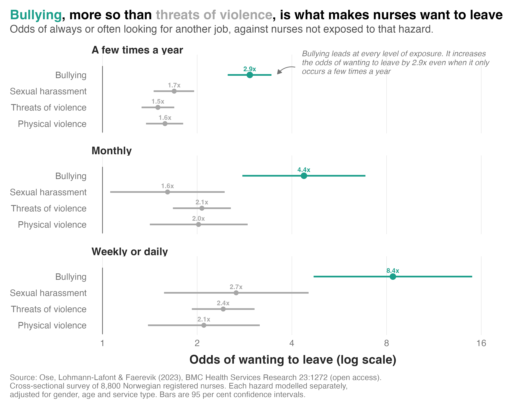

Ose and colleagues (2023) published an interesting study a few years ago on workplace aggression among nurses. They surveyed 8,800 registered nurses across Norway, measuring exposure to physical violence, threats of violence, sexual harassment and bullying over 12 months, along with the extent to which nurses were looking for work elsewhere.
The figure below shows nurses' odds of wanting to leave at each level of exposure, against a nurse not exposed to that hazard.

Here's what they found:
1) Bullying has the strongest association with turnover at every level of exposure. A nurse who reports being bullied a few times a year has 2.9 times the odds of looking for another job. One bullied weekly or daily has 8.4 times the odds.
2) Occasional bullying is associated with turnover intentions as strongly as frequent violence. A nurse who is bullied only a few times a year is at least as likely to be looking for another job as one who faces threats of violence weekly or daily, and the same holds when the comparison is physical violence.
3) Bullying is less frequent, but just as much of a problem. Three times as many nurses receive threats of violence as report being bullied. But once you account for how much more strongly bullying is associated with intentions to leave, the two hazards have roughly equal impacts on retention.
The focus is usually on protecting nurses from patients, and for violence that makes sense. Patients and their relatives were responsible for almost all of the physical violence and threats that nurses reported. Bullying is the exception. Only 21 per cent of it came from patients or their relatives, while most of it came from colleagues (62.5 per cent) and managers (34.8 per cent). Psychosocial safety in health care is as much about what happens within the team as through interaction with patients.
A couple of caveats. This is cross-sectional, so we can't infer causality. A nurse who already wants to leave may recall more aggression. Also, wanting to leave is not the same as actually leaving. Though intention to leave is a strong predictor of eventual turnover, other factors impact the decision to actually leave the organisation (e.g., availability of alternative employment).
So what can be done? It's important to consider the extent to which your psychosocial risk controls address coworker and manager behaviour, rather than just what happens in the ward. A duress alarm is no help to a nurse whose problem is the person rostered on beside them.